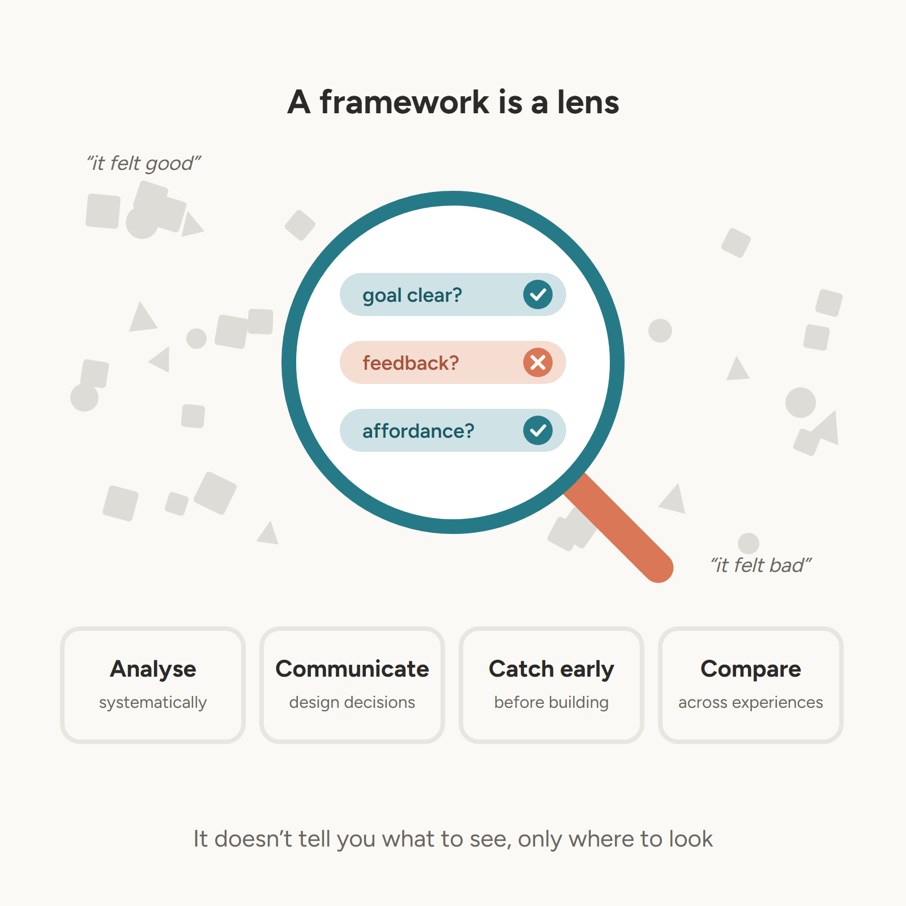
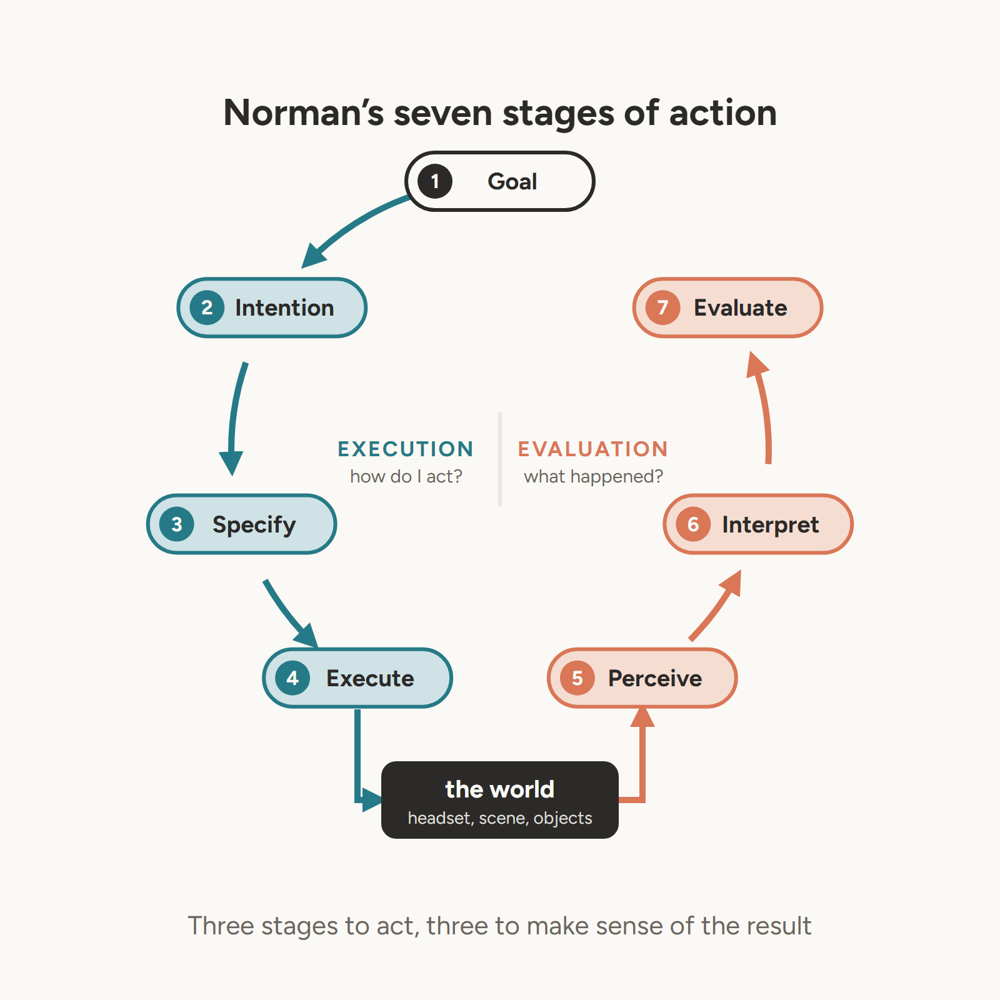
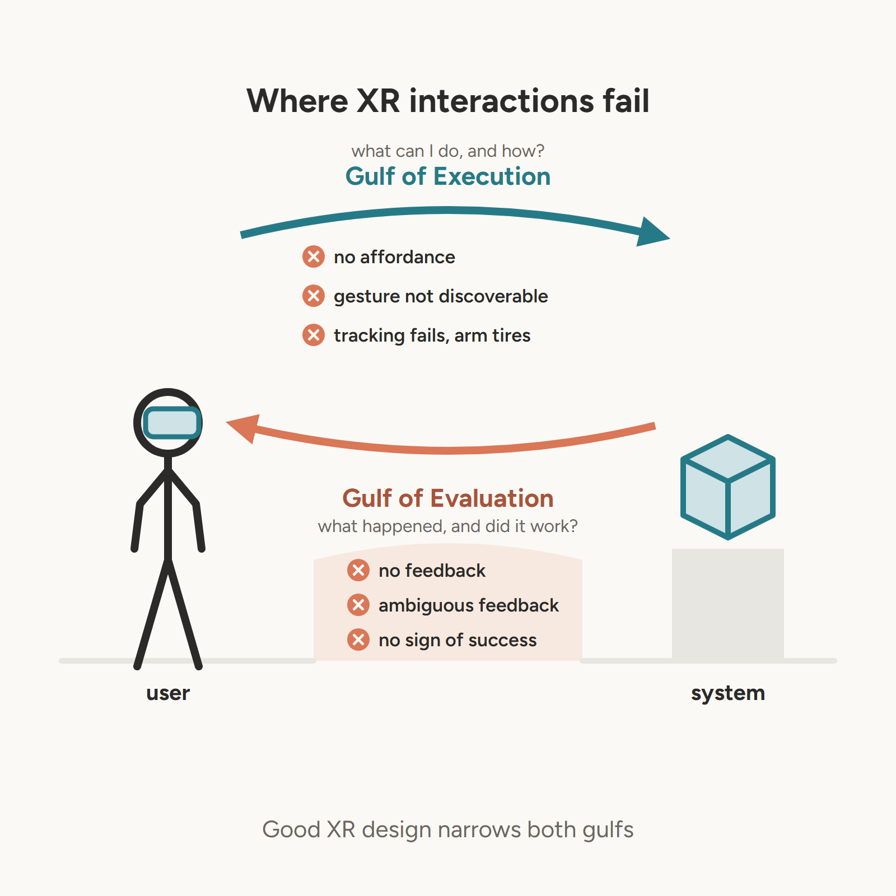
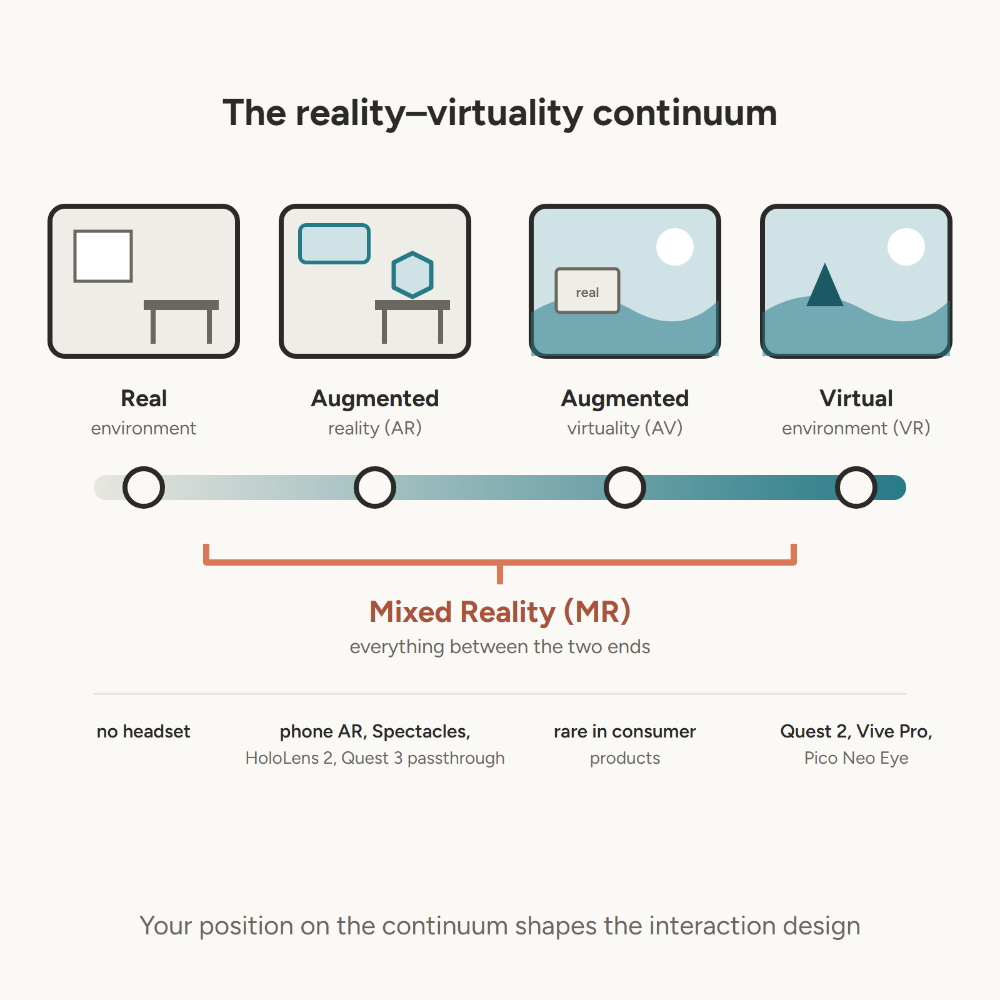
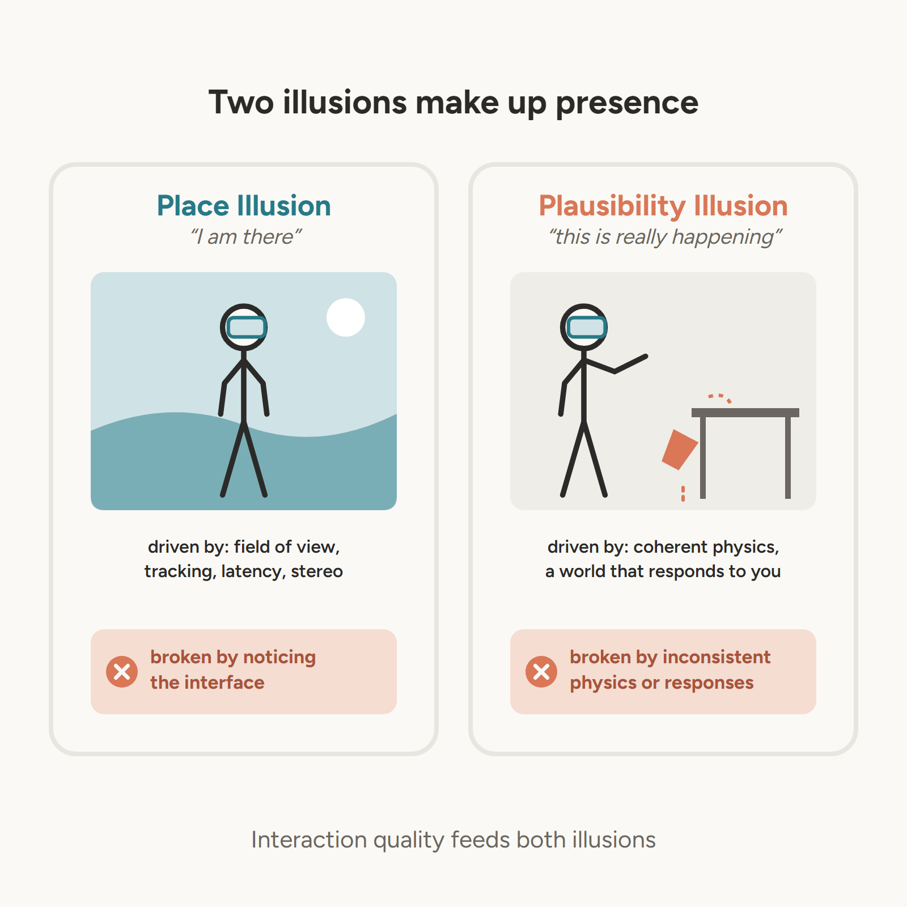
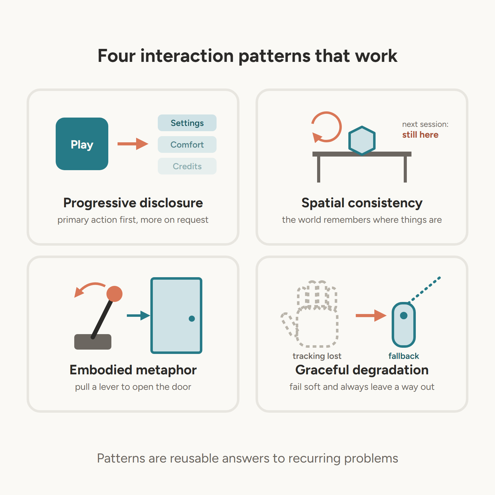
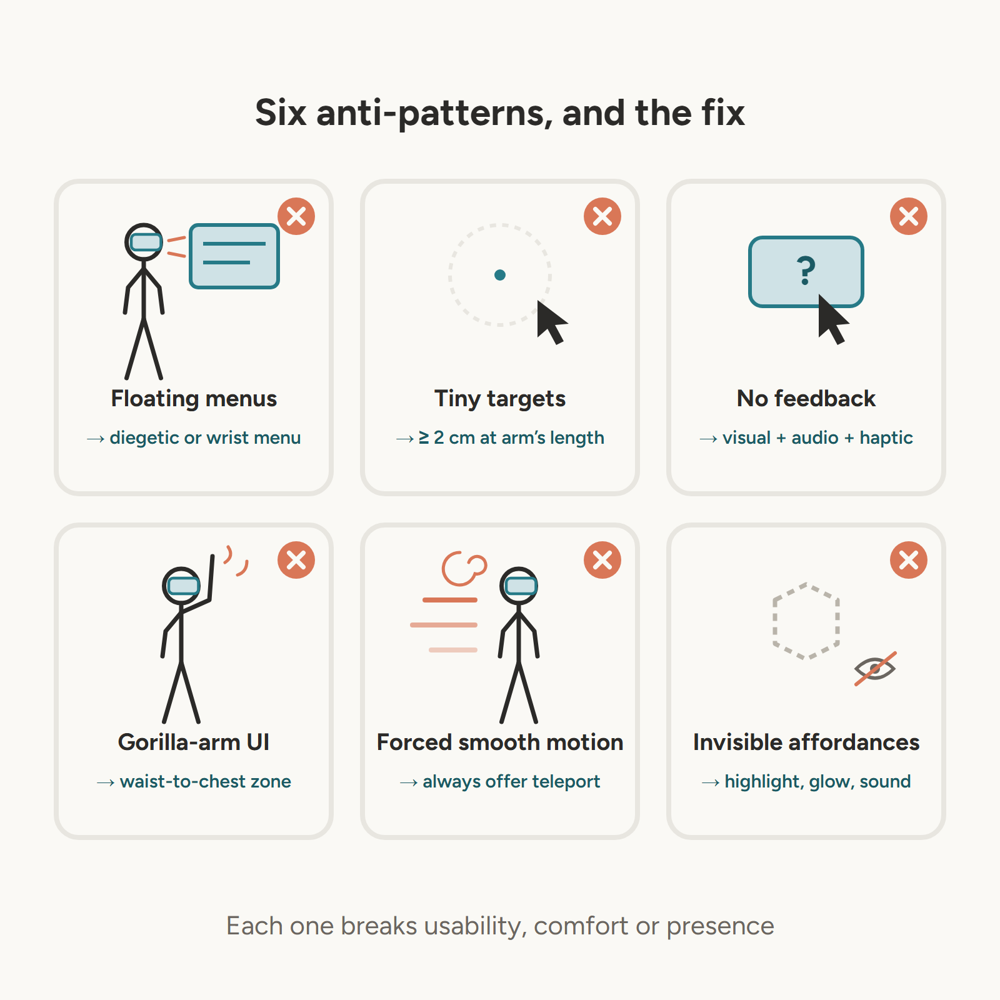
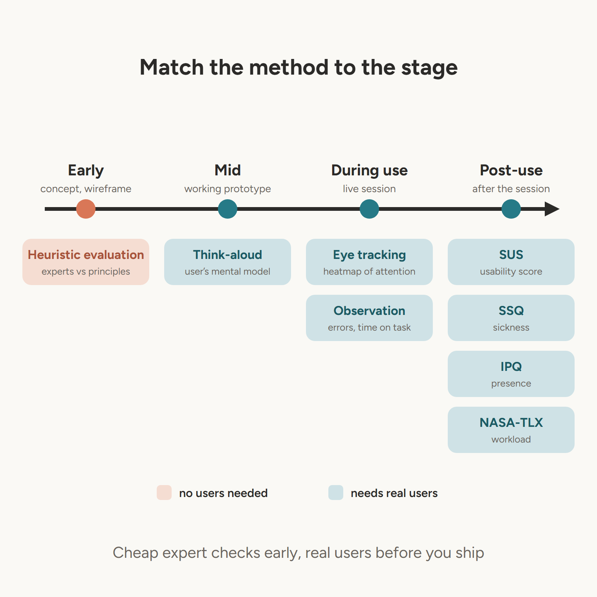
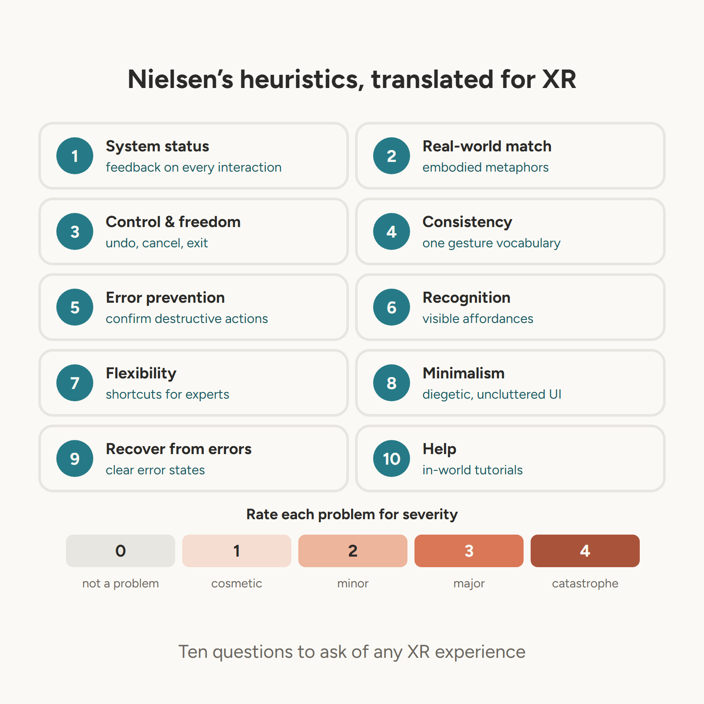

Week 6 Lecture Notes
Interaction Design Frameworks & Experience Analysis
1 Overview
Week 6 is the analytical pivot of the module. Having established hardware knowledge (Weeks 1–2), perceptual foundations (Week 3), and interaction mechanics (Weeks 4–5), we now develop the critical vocabulary needed to analyse, evaluate, and improve XR experiences. This week also launches Assessment 2.
By the end of this week you should be able to:
- Apply Norman’s action cycle and design principles to locate where an XR interaction fails
- Position an experience or device on Milgram’s reality–virtuality continuum and explain what that implies for interaction
- Explain how interaction quality affects Place Illusion and Plausibility Illusion
- Recognise common XR interaction patterns and anti-patterns
- Choose an evaluation method that fits the stage of a design and the question being asked
2 1. Why Frameworks Matter
Design frameworks are not rigid rules — they are structured lenses that help us:
- Analyse existing experiences systematically rather than impressionistically
- Communicate design decisions to collaborators and stakeholders
- Identify problems before committing to implementation
- Compare experiences across different platforms and contexts
Without frameworks, XR critique tends to collapse into “it felt good” or “it felt bad” — subjective impressions that cannot drive improvement.

No single framework covers everything. Each one this week answers a different question:
| Framework | Question it answers |
|---|---|
| Norman’s action cycle | Where in an interaction does the user get stuck? |
| Milgram’s continuum | What kind of XR experience is this, and what does that constrain? |
| Slater’s presence model | Why does a usability problem also damage the experience? |
| Heuristics | Which established principles does the design violate, and how badly? |
A strong analysis combines two or more lenses: for example, Norman to find the failure point and Slater to explain its effect on presence.
3 2. Norman’s Action Cycle
Donald Norman’s seven-stage action cycle (from The Design of Everyday Things, 1988, revised 2013) describes how humans interact with any system:
- Form a goal: What does the user want to achieve?
- Form an intention: How do they plan to achieve it?
- Specify an action: Which specific action will they take?
- Execute the action: Perform the physical action
- Perceive the state of the world: What changed?
- Interpret the state: What does the change mean?
- Evaluate the outcome: Did it achieve the goal?
Stages 2–4 form the execution side of the cycle (getting from a goal to an action in the world); stages 5–7 form the evaluation side (getting from a change in the world back to a judgement about the goal). In practice users cycle through these stages many times a second, and often skip or reorder them — the model is a diagnostic tool, not a literal description of thought.

3.1 2.1 Applying the Cycle to XR
The cycle is particularly useful for XR because it maps directly onto the interaction design challenges we’ve covered:
| Stage | XR Design Question |
|---|---|
| Form goal | Is the goal clear from the environment? |
| Form intention | Does the user know what actions are possible? |
| Specify action | Is the correct gesture/input discoverable? |
| Execute action | Is the input reliable and comfortable? |
| Perceive state | Is there clear feedback? |
| Interpret state | Is the feedback unambiguous? |
| Evaluate outcome | Does the user know if they succeeded? |
3.2 2.2 The Gulf of Execution and Gulf of Evaluation
Norman identifies two key gaps:
Gulf of Execution: The gap between what the user wants to do and what actions are available. In XR, this manifests as invisible affordances — objects that can be interacted with but give no indication of this — undiscoverable gestures, and inputs that fail because of tracking loss or fatigue.
Gulf of Evaluation: The gap between the system’s state and the user’s perception of it. In XR, this manifests as missing or ambiguous feedback — the user performs an action but doesn’t know if it worked.
Good XR design minimises both gulfs.

3.3 2.3 Norman’s Design Principles in XR
Norman pairs the action cycle with a set of design principles. These are the levers a designer uses to close the two gulfs:
| Principle | Meaning | XR example |
|---|---|---|
| Affordance | What actions an object makes possible | A handle-shaped object can be grabbed |
| Signifier | A perceivable cue that shows where and how to act | A hover glow, a hand-shaped outline on a lever |
| Mapping | The relationship between control and effect | Twisting the wrist rotates the held object the same way |
| Feedback | Immediate, informative response to an action | A click sound and a haptic pulse when a button is pressed |
| Constraints | Limits that prevent wrong actions | Teleport arc refuses to land inside walls |
| Conceptual model | The user’s understanding of how the system works | “Grip to hold, trigger to use” applied consistently |
Norman’s revised edition stresses the difference between affordances and signifiers. In XR almost anything could be interactive, so affordances alone are not enough: designers must add signifiers that tell the user which objects actually respond. Many “invisible affordance” problems are really missing signifiers.
3.4 2.4 Worked Example: Picking Up a Key
Consider a hypothetical VR escape room where the user must pick up a key from a desk.
| Stage | What happens | Problem | Fix |
|---|---|---|---|
| Goal | “Unlock the door” | — | — |
| Intention | User looks for something to open the door | Key looks identical to static props | Subtle highlight on interactable items (signifier) |
| Specify | User tries to pinch the key | Game expects a grip press | Accept both, or show a grip hint on hover |
| Execute | User reaches down to the desk | Desk is below seated reach | Raise the desk or support remote grab |
| Perceive | Key appears in hand | No sound or haptic | Add a pickup sound and a short haptic pulse |
| Interpret | User is unsure whether it is “held” | Key jitters in hand | Snap to a stable held pose |
| Evaluate | User walks to the door | — | — |
This kind of table, built for one interaction, is exactly the form of analysis expected in Assessment 2.
4 3. Milgram’s Reality-Virtuality Continuum
Paul Milgram and Fumio Kishino (1994) proposed a continuum from fully real to fully virtual environments. The two ends are the real environment and the virtual environment; mixed reality (MR) is not a single point but the whole span between them:
Real ←———————————— Mixed Reality (MR) ————————————→ Virtual
Environment AR AV Environment
Augmented Reality (AR): Primarily real world with virtual overlays. The user sees the real world and virtual content is added. Examples: Snap Spectacles, HoloLens 2, phone-based AR.
Augmented Virtuality (AV): Primarily virtual with real elements incorporated — for example a real keyboard or the user’s real hands shown inside a virtual scene. Rare in consumer products.
Virtual Reality (VR): Fully virtual environment. Examples: Quest 2, Vive Pro, Pico Neo Eye.
4.1 3.1 How “Mixed Reality” Is Used Today
In Milgram’s original sense, AR and AV are both forms of mixed reality. Industry usage has drifted: vendors now often use “mixed reality” to mean AR in which virtual objects are anchored to and interact with the physical room — occluded by real furniture, resting on real tables. Microsoft used it for HoloLens; Meta uses it for colour-passthrough features on Quest 3.
Passthrough headsets also blur the continuum because one device can move along it at runtime: the same Quest 3 can show the real room with a few virtual objects, a virtual room with a “window” onto reality, or a fully virtual scene. When you analyse an experience, describe where the experience sits, not just which device it runs on.
4.2 3.2 Design Implications
The position on the continuum determines fundamental interaction design decisions:
| Continuum Position | Interaction Considerations |
|---|---|
| AR | Must work in unpredictable real environments; lighting varies; user is mobile; virtual content must not hide real hazards |
| MR (anchored to the room) | Spatial anchoring critical; virtual objects must respect real-world surfaces and occlusion |
| AV | Real elements must be tracked and aligned precisely, or the illusion breaks |
| VR | Full control of environment; can design for specific hardware; comfort and physical safety (guardian/boundary) are primary concerns |
5 4. Presence Theory (Slater)
Mel Slater’s presence model (2009) distinguishes two components:
Place Illusion (PI): The sense of “being there” — the feeling that you are physically located in the virtual space. PI is primarily driven by perceptual factors: field of view, tracking quality, latency, stereoscopy. Slater ties PI to sensorimotor contingencies: the more ways you can perceive the world with your body as you would in reality (turning your head, leaning to look around an object), the stronger the illusion.
Plausibility Illusion (Psi): The sense that “this is really happening” — that events in the virtual world are real events, not simulations. Psi is driven by the coherence and responsiveness of the virtual world, especially events that respond to you (a character that turns to look at you, an object that reacts when you touch it).
Recall from Week 3 that immersion is an objective property of the system (what it can deliver), while presence is the subjective response it produces. PI and Psi are two parts of that response.

5.1 4.1 How Interaction Affects Presence
Poor interaction design breaks both components:
- Breaks PI: When you notice the interface (floating menus, visible ray casters, controller models that don’t match your hands), you are reminded that you are in a simulation.
- Breaks Psi: When the world doesn’t respond consistently (objects that don’t fall, physics that behaves unexpectedly, interactions that don’t work), the plausibility of the experience collapses.
This is why interaction design is not just a usability concern — it is a fundamental component of the XR experience itself.
5.2 4.2 Embodiment
A closely related concept is the sense of embodiment (Kilteni, Groten & Slater, 2012): the feeling that a virtual body is your own. It has three parts — self-location (where I am), agency (I control this body) and body ownership (this body is mine). Interaction design affects all three: virtual hands that track accurately and respond instantly strengthen agency, while hands that pass through solid objects or lag behind real movement weaken it.
6 5. Interaction Patterns
A pattern is a reusable solution to a recurring design problem. Naming patterns lets designers discuss solutions quickly and lets analysts recognise when a known good solution has been used — or ignored.

6.1 5.1 Progressive Disclosure
Reveal complexity gradually. Present only the options relevant to the current task; reveal additional options as the user progresses.
XR application: Don’t present all menu options at once. Start with the primary action; reveal secondary options through exploration or explicit request. Introduce new mechanics one at a time, each with a moment to practise before the next.
6.2 5.2 Spatial Consistency
Objects stay where the user places them. The virtual world has memory. This is a fundamental expectation users bring from the real world.
XR application: Avoid resetting object positions between scenes or sessions without explicit user action. If objects must reset, provide clear visual indication. In AR, use persistent spatial anchors so content reappears in the same physical place.
6.3 5.3 Embodied Metaphor
Map virtual actions to real-world physical actions. Leverage the user’s existing physical knowledge.
Examples:
- Pull a lever to open a door (not press a button)
- Throw an object by physically throwing (not pressing a button)
- Write by physically writing (not typing)
Embodied metaphors reduce the Gulf of Execution because the user already knows the action. They must be balanced against fatigue: a metaphor that requires large, repeated arm movements may be natural but tiring.
6.4 5.4 Graceful Degradation
When tracking fails, input is lost, or the system encounters an error, degrade gracefully rather than crashing or freezing.
XR application: If hand tracking is lost, fall back to controller input. If a gesture fails, provide an alternative button input. Always give the user a way out.
7 6. Interaction Anti-Patterns
An anti-pattern is a common solution that looks reasonable but reliably causes problems. Most XR anti-patterns are desktop or mobile conventions carried into 3D without adaptation.

| Anti-Pattern | Why It Fails | Better Alternative |
|---|---|---|
| Floating menus | Break immersion, vergence conflict | Diegetic UI, wrist menu |
| Tiny targets | Violate Fitts’ Law | Minimum 2cm at arm’s length |
| No feedback | User doesn’t know if action worked | Visual + audio + haptic |
| Gorilla arm UI | Fatigue in minutes | Waist-height interaction zone |
| Forced smooth locomotion | Sickness for sensitive users | Always offer teleport |
| Invisible affordances | User can’t discover interactions | Highlight, glow, audio cue |
| Irreversible actions | User afraid to explore | Confirm dialogs, undo |
Each anti-pattern can be traced to one of this week’s frameworks: tiny targets and invisible affordances widen the Gulf of Execution, missing feedback widens the Gulf of Evaluation, and floating menus break Place Illusion.
8 7. Evaluation Methods
Evaluation methods fall into two broad families:
- Inspection methods — experts review the design against principles. No users are needed, so they are fast and cheap and can be used before anything is built.
- Empirical methods — real users try the design while you observe, measure or ask them. These find problems experts miss, but cost more time.
The right choice depends on the stage of the design and the question you are asking.

8.1 7.1 Heuristic Evaluation
Expert review against a set of established principles. Fast and cheap — can be done without users.
Process:
- Select 3–5 evaluators
- Each evaluator independently reviews the experience against the heuristics
- Evaluators rate severity of each violation (0–4 scale)
- Aggregate findings and prioritise
Nielsen’s 10 heuristics adapted for XR:
| # | Nielsen heuristic | XR translation |
|---|---|---|
| 1 | Visibility of system status | Feedback on every interaction |
| 2 | Match between system and real world | Embodied metaphors |
| 3 | User control and freedom | Undo, cancel, exit |
| 4 | Consistency and standards | Consistent gesture vocabulary |
| 5 | Error prevention | Confirm before destructive actions |
| 6 | Recognition rather than recall | Visible affordances and signifiers |
| 7 | Flexibility and efficiency of use | Shortcuts for expert users |
| 8 | Aesthetic and minimalist design | Diegetic, uncluttered UI |
| 9 | Help users recognise, diagnose and recover from errors | Clear error states |
| 10 | Help and documentation | In-world tutorials |

Severity ratings (Nielsen):
| Rating | Meaning |
|---|---|
| 0 | Not a usability problem |
| 1 | Cosmetic — fix only if time allows |
| 2 | Minor — low priority |
| 3 | Major — important to fix |
| 4 | Catastrophe — must fix before release |
Severity combines how often the problem occurs, how badly it affects users, and whether users can work around it. Nielsen’s heuristics were written for desktop software, so XR-specific sets add comfort, presence and physical safety. Sutcliffe and Gault (2004), for example, proposed heuristics for virtual environments that include natural engagement, compatibility with the user’s task and sense of presence.
8.2 7.2 Think-Aloud Protocol
Users verbalise their thoughts while using the experience. Reveals mental models and points of confusion.
XR challenge: Verbalising while wearing a headset is awkward. Consider:
- Recording audio from inside the headset
- Using a mirrored display so an observer can see what the user sees
- Brief the user before starting — they often go quiet in XR
- A retrospective think-aloud, where the user watches a recording of their session afterwards and comments on it, avoids interrupting immersion
8.3 7.3 Observation and Task Metrics
Watching what users do — not just what they say — gives objective evidence:
- Task completion: did they succeed?
- Time on task: how long did it take?
- Errors: wrong actions, missed targets, repeated attempts
- Requests for help: where did they get stuck?
Record the mirrored view and, where possible, a camera view of the user’s body. Many XR problems (reaching, stooping, turning to find UI) are only visible from outside the headset.
8.4 7.4 Standardised Questionnaires
| Questionnaire | Measures | Items |
|---|---|---|
| SUS (System Usability Scale) | Overall usability | 10 items |
| SSQ (Simulator Sickness Questionnaire) | Comfort/sickness | 16 items |
| IPQ (Igroup Presence Questionnaire) | Sense of presence | 14 items |
| NASA-TLX | Perceived workload | 6 dimensions |
SUS produces a score from 0 to 100; scores above about 68 are generally considered above average. The SSQ gives three subscales — nausea, oculomotor discomfort and disorientation — and a total. It is good practice to give the SSQ both before and after exposure so you can see the change, not just the end state.
When evaluating your Assessment 2 prototype, SUS is recommended as a minimum. SSQ is recommended if your prototype involves locomotion. Use the consent form and SSQ from Week 5.
8.5 7.5 Choosing a Method
| If you want to know… | Use |
|---|---|
| What design problems exist before building | Heuristic evaluation |
| Why users struggle | Think-aloud, observation |
| How well users perform | Task metrics |
| How usable it feels overall | SUS |
| Whether it makes people unwell | SSQ (before and after) |
| Whether users feel present | IPQ |
| How mentally demanding it is | NASA-TLX |
Small user tests are still worthwhile: a handful of participants will reveal the most frequent problems, though not every problem. Combine an inspection method with at least one empirical method, and be honest in your report about what a small sample can and cannot show.
8.6 7.6 Ethics and Safety in XR Evaluation
User testing in XR carries physical and wellbeing risks that desktop testing does not:
- Obtain informed consent and explain that participants can stop at any time without giving a reason
- Screen for conditions such as photosensitive epilepsy or susceptibility to motion sickness
- Clear the play space and keep an observer beside the participant
- Keep sessions short and stop immediately if sickness symptoms appear
- Store any recordings and questionnaire data securely and anonymise results
9 8. Structuring an Experience Analysis
Assessment 2 asks you to analyse an existing experience. A clear structure is:
- Describe the experience briefly: platform, input, position on Milgram’s continuum, target user
- Select two or three key interactions to focus on — depth beats breadth
- Analyse each interaction with a framework (for example, an action-cycle table as in Section 2.4)
- Explain the effect on presence and comfort using Slater’s model and Week 3–5 concepts
- Judge strengths and weaknesses against heuristics, with severity ratings
- Support every claim with evidence: screenshots, recordings, observations or questionnaire results
Avoid description without critique. “The menu is on the wrist” is description; “the wrist menu keeps controls within reach and avoids head-locked UI, but it has no haptic confirmation, so users repeat selections” is analysis.
10 Self-Check Questions
- Apply Norman’s Action Cycle to a specific interaction in an XR experience you have used. Where does it fail?
- What is the difference between an affordance and a signifier? Give an XR example of each.
- Where on Milgram’s continuum would you place the HoloLens 2? The Quest 2? The Snap Spectacles? Why is the Quest 3 harder to place?
- What is the difference between Place Illusion and Plausibility Illusion?
- Name three interaction anti-patterns and explain which gulf, or which presence component, each one damages.
- When would you use a heuristic evaluation rather than a user test?
- Why should the SSQ be given both before and after an XR session?
11 References
- Norman, D. (2013) The Design of Everyday Things (revised ed.). Basic Books.
- Milgram, P. & Kishino, F. (1994) “A taxonomy of mixed reality visual displays.” IEICE Transactions on Information and Systems, E77-D(12), 1321–1329.
- Slater, M. (2009) “Place illusion and plausibility can lead to realistic behaviour in immersive virtual environments.” Philosophical Transactions of the Royal Society B, 364(1535), 3549–3557.
- Kilteni, K., Groten, R. & Slater, M. (2012) “The sense of embodiment in virtual reality.” Presence: Teleoperators and Virtual Environments, 21(4), 373–387.
- Nielsen, J. (1994) “Heuristic evaluation.” In Nielsen, J. & Mack, R.L. (eds.) Usability Inspection Methods. Wiley.
- Sutcliffe, A. & Gault, B. (2004) “Heuristic evaluation of virtual reality applications.” Interacting with Computers, 16(4), 831–849.
- Brooke, J. (1996) “SUS: A ‘quick and dirty’ usability scale.” In Jordan et al. (eds.) Usability Evaluation in Industry. Taylor & Francis.
- Kennedy, R.S. et al. (1993) “Simulator sickness questionnaire.” International Journal of Aviation Psychology, 3(3), 203–220.
- Schubert, T., Friedmann, F. & Regenbrecht, H. (2001) “The experience of presence: Factor analytic insights.” Presence: Teleoperators and Virtual Environments, 10(3), 266–281.
- Hart, S.G. & Staveland, L.E. (1988) “Development of NASA-TLX (Task Load Index).” In Hancock, P.A. & Meshkati, N. (eds.) Human Mental Workload. North-Holland.